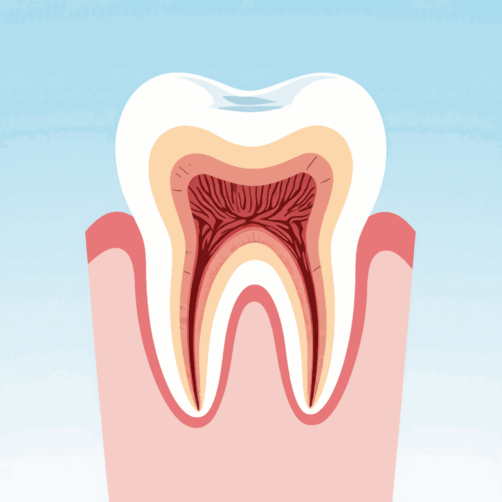
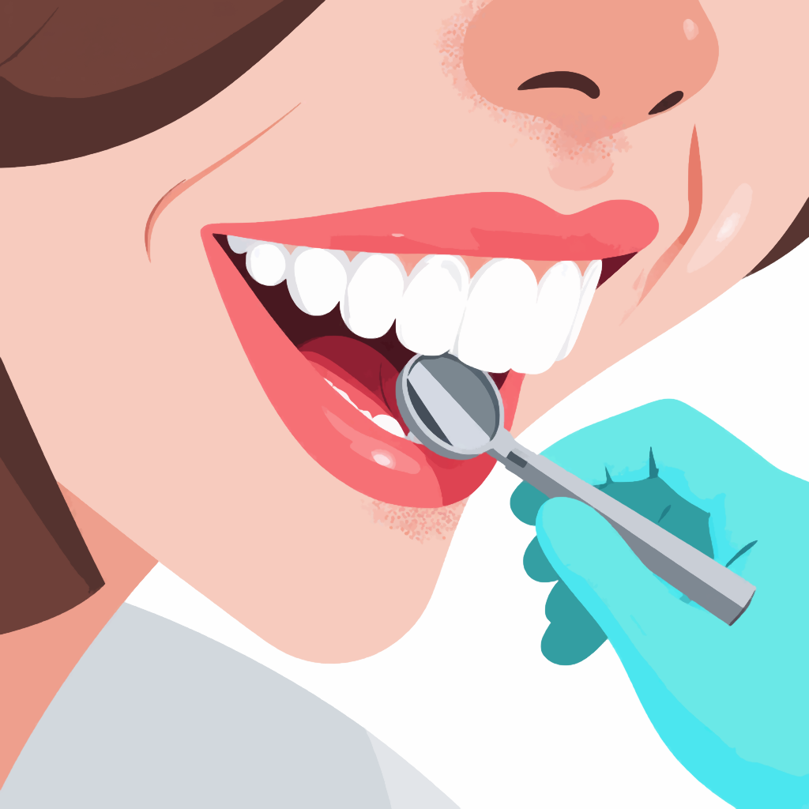
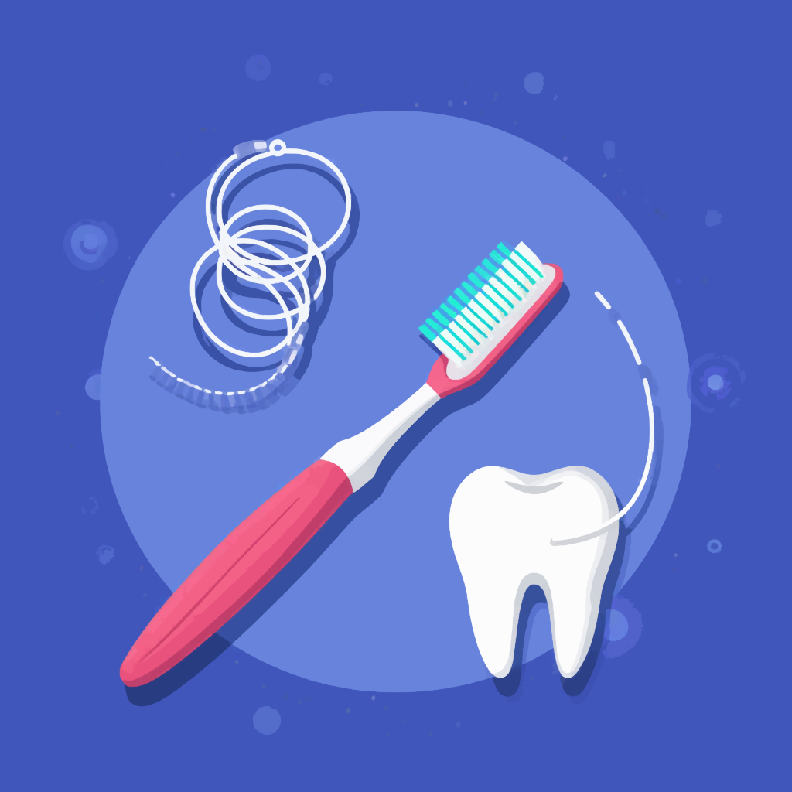

Стоматологические статьи
Терапевтическая стоматология: путь к здоровой улыбке
Автор: Анна, врач-стоматолог с 15-летним опытом практики
Терапевтическая стоматология — это словно искусство восстановления гармонии в улыбке. Она соединяет в себе науку, технику и человеческое участие. Если хирургия — это громкое вмешательство, то терапия в стоматологии похожа на мягкий шёпот, который предупреждает бурю.
От «Максимовского» до национальных руководств
Когда студенты стоматологических факультетов впервые открывают книгу Максимовского, они словно входят в мир, где зуб — это не просто кальцинированная ткань, а целая вселенная. В классических изданиях по терапевтической стоматологии шаг за шагом раскрываются основы: строение зуба, закономерности кариозного процесса, патологии пульпы и периодонта.
С годами учебная литература эволюционировала: от монографий и атласов до современного «Национального руководства», которое объединяет весь накопленный опыт. Это руководство для врача-стоматолога сегодня играет ту же роль, что компас для мореплавателя: указывает направление, помогает избежать ошибок, держит в фокусе главное — здоровье пациента.

Фантомный курс — школа первых движений
Невозможно забыть первые шаги в стоматологии: занятия на фантомах. Именно фантомный курс превращает робкие движения в уверенные. Здесь студент учится держать инструмент так же, как музыкант — смычок, добиваясь точности и гармонии. Ошибка в фантомном классе не стоит пациенту здоровья, но становится ценным опытом для будущего врача.
Болезни зубов: главные враги улыбки
Терапевтическая стоматология фокусируется на трёх основных «врагах» зуба:
- Кариес — словно ржа на металле, он незаметно подтачивает эмаль и дентин.
- Пульпит — воспаление «сердца» зуба, которое отзывается острой болью.
- Периодонтит — поражение связочного аппарата зуба, когда воспаление выходит за
пределы коронки.
Каждая из этих болезней требует тонкого подхода, и именно стоматолог-терапевт становится тем мастером, который умеет остановить разрушение и сохранить естественную ткань.
Врач-стоматолог терапевт — «хранитель зуба»
Если хирург удаляет, ортодонт исправляет, ортопед протезирует, то врач-стоматолог терапевт хранит зубы от разрушения. Его работа требует не только знаний, но и терпения. Каждый приём — это диалог, доверие и кропотливая работа.
Люди чаще всего приходят к терапевту с болью. Но за болью скрываются страх, усталость, иногда даже чувство вины («дотянул, не пошёл раньше»). И здесь важно не только лечение, но и поддержка.

Лечение кариеса — шаг за шагом
Процесс лечения кариеса можно сравнить с реставрацией старинной картины. Сначала убирается всё повреждённое, затем подбирается материал для восстановления. Современные композиты позволяют воссоздать не только форму, но и естественный блеск зуба.
- Диагностика — «осмотр холста».
- Удаление поражённых тканей — «очистка повреждённых слоёв».
- Восстановление пломбой — «нанесение новых красок».
Детская стоматология — забота с первых лет
Особое направление терапевтической стоматологии — детская стоматология. Здесь важны не только знания, но и умение разговаривать с маленьким пациентом на языке сказок и метафор.
Ребёнку можно объяснить лечение кариеса так: «В зубе завёлся маленький червячок, мы его сейчас выгоним, и зуб снова будет крепким». Вовремя пролеченный молочный зуб — это вклад в здоровье постоянных.

Учебники и современные ресурсы
Классические учебники по стоматологии остаются фундаментом, но сегодня многое изменилось. Лекции можно найти онлайн, книги заказать на Wildberries или других маркетплейсах. Пациенты стали более информированными, читают о методах лечения, сравнивают материалы и даже приходят с распечатанными страницами из интернета.
И это прекрасно: грамотный пациент — лучший союзник врача.
*[vector art, smartphone with online bookstore, dental books on screen, modern flat style, adobe illustrator]
Заключение
Терапевтическая стоматология — это не просто лечение зубов. Это постоянная работа на грани науки и искусства, умение слышать пациента и сохранять то, что дано природой.
За 15 лет практики я поняла: люди приходят не только за лечением кариеса, пульпита или периодонтита. Они приходят за спокойствием, за ощущением, что их здоровье в надёжных руках.
И каждый раз, когда пациент уходит с улыбкой без боли — это маленькая победа, которая делает мир светлее.